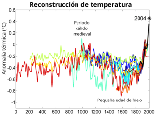

El calentamiento global o cambio climático es el aumento observado en más de un siglo de la temperatura del sistema climático de la Tierra y los efectos de aquel aumento. Múltiples líneas de pruebas científicas demuestran que el sistema climático se está calentando.
El cambio climático futuro y los impactos asociados serán distintos en una región a otra alrededor del globo. Los efectos anticipados incluyen un aumento en las temperaturas globales, una subida en el nivel del mar, un cambio en los patrones de las precipitaciones y una expansión de los desiertos subtropicales. Se espera que el calentamiento sea mayor en la tierra que en los océanos y el más acentuado ocurra en el Ártico, con el continuo retroceso de los glaciares, el permafrost y la banquisa.
La temperatura promedio de la superficie de la Tierra ha aumentado alrededor de 0,8 °C desde 1880. La velocidad de calentamiento casi se duplicó en la segunda mitad de dicho periodo (0,13 ± 0,03 °C por década, versus 0,07 ± 0,02 °C por década). El efecto isla de calor es muy pequeño, estimado en menos de 0,002 °C de calentamiento por década desde 1900. Las temperaturas en la troposfera inferior se han incrementado entre 0,13 y 0,22 °C por década desde 1979, de acuerdo con las mediciones de temperatura por satélite. Los proxies climáticos demuestran que la temperatura se ha mantenido relativamente estable durante mil o dos mil años hasta 1850, con fluctuaciones que varían regionalmente tales como el Período cálido medieval y la Pequeña edad de hielo.
El calentamiento que se evidencia en los registros de temperatura instrumental es coherente con una amplia gama de observaciones, de acuerdo con lo documentado por muchos equipos científicos independientes. Algunos ejemplos son el aumento del nivel del mar debido a la fusión de la nieve y el hielo y la expansión del agua al calentarse por encima de 3,98 °C (dilatación térmica), el derretimiento generalizado de la nieve y el hielo con base en tierra, el aumento del contenido oceánico de calor, el aumento de la humedad, y la precocidad de los eventos primaverales, por ejemplo, la floración de las plantas. La probabilidad de que estos cambios pudieran haber ocurrido por azar es virtualmente cero.
El sistema climático puede responder a cambios en los forzamientos externos. Estos son «externos» al sistema climático pero no necesariamente externos a la Tierra. Ejemplos de forzamientos externos incluyen cambios en la composición atmosférica (p. ej. un aumento en las concentraciones de gases de efecto invernadero), la luminosidad solar, las erupciones volcánicas y las variaciones en la órbita de la Tierra alrededor del Sol.
El sistema climático incluye una serie de retroalimentaciones, que alteran la respuesta del sistema a los cambios en los forzamientos externos. Las retroalimentaciones positivas incrementan la respuesta del sistema climático a un forzamiento inicial, mientras que las retroalimentaciones negativas la reducen.